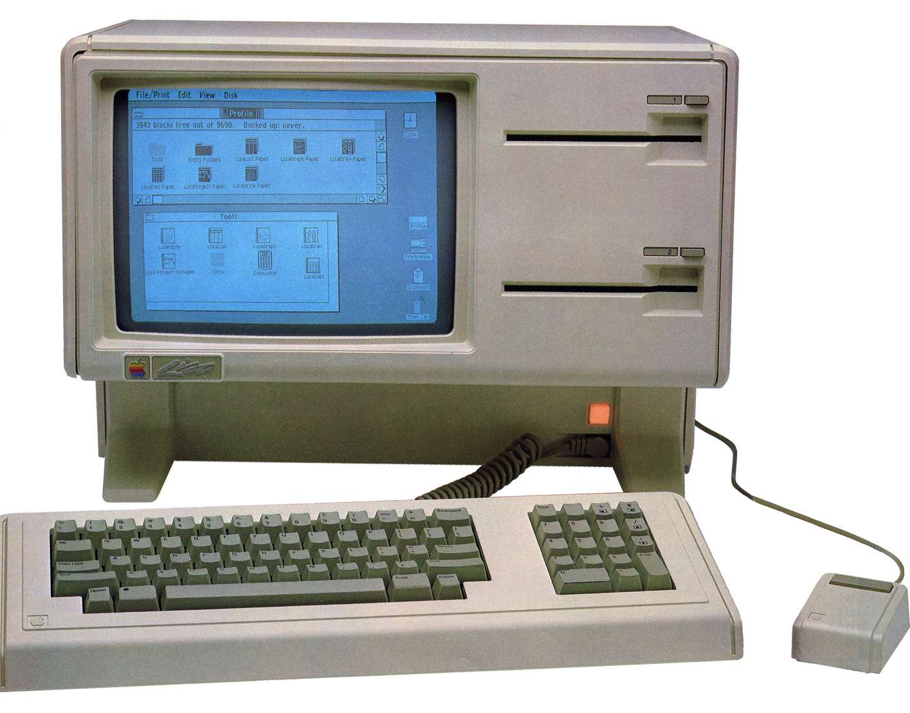
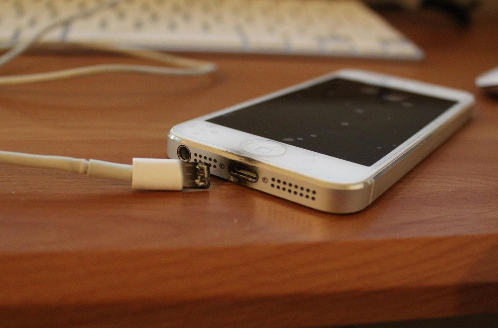

Where the world learns infinite possibilities
| Science Technology Engineering Maths Where the world learns infinite possibilities |
| Home | About Us | Contact Us | Gallery | Facts | Users |
|---|
| Facts that Will Blow Your mind |
| 1. There is enough DNA in an average person’s body to stretch from the sun to Pluto and back — 17 times | |
8. The known universe is made up of 50,000,000,000 galaxies. There are between 100,000,000,000 and 1,000,000,000,000 stars in a normal galaxy. In the Milky Way alone there might be as many 100 billion Earth-like planets. Still think you’re alone ? | |
18. The Apple Lisa released in june 1983 was the first commercial computer with a graphical user interface (GUI) and a mouse. | |
|  |
|
19. Using your phone while it is on charge can damage the battery, this is why the leads for the chargers are so short. | |
|  |
|
20 . Websites such as Facebook, Twitter and YouTube are banned in China.
| |
| Next |
|---|